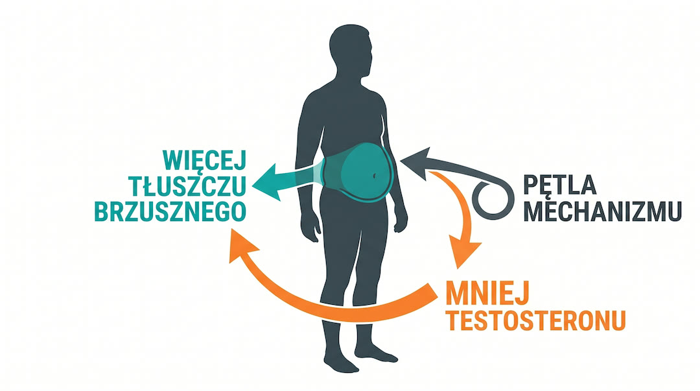
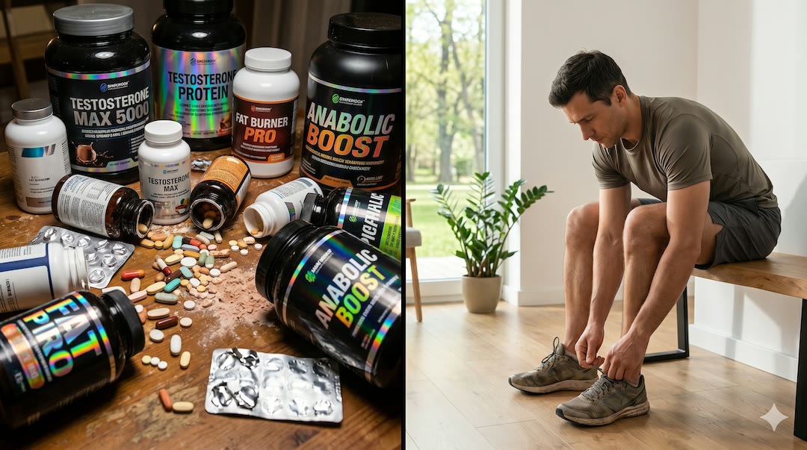
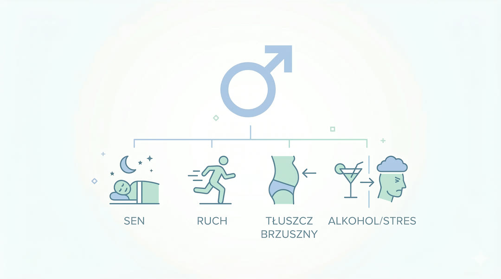
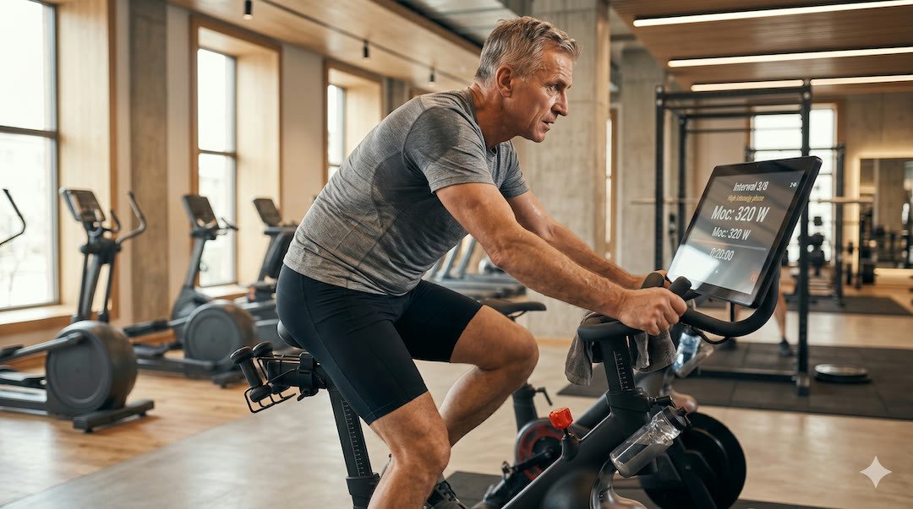
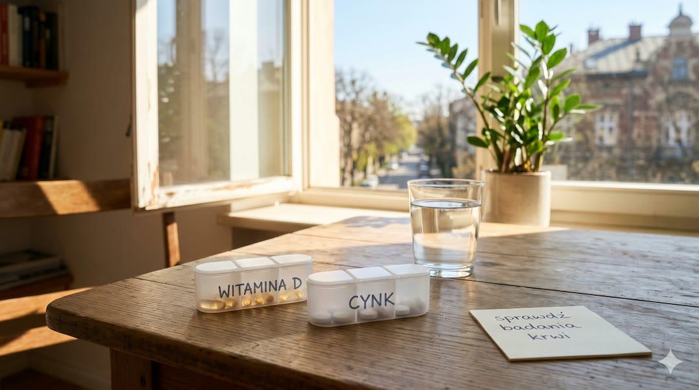

Pewnego dnia łapiesz się na tym, że po pracy nie masz już energii nawet na krótki trening, a brzuch zaczyna żyć własnym życiem. W głowie pojawia się hasło testosteron. Po pięćdziesiątce to temat realny, ale między internetowym marketingiem a medycyną jest przepaść. Tu dostajesz praktyczny plan: co sprawdzić, co poprawić i kiedy naprawdę rozmawiać o leczeniu.
Szybka odpowiedź
Naturalne podnoszenie testosteronu po 50-tce opiera się na redukcji kortyzolu, treningu siłowym nóg i dbaniu o poziom cynku oraz witaminy D3. Kluczowe jest unikanie nadmiaru tkanki tłuszczowej trzewnej, która aromatyzuje testosteron do estrogenu. Zadbaj o 7-8 godzin głębokiego snu, bo to właśnie wtedy odbywa się główna produkcja tego hormonu.
Kluczowe wnioski
Kluczowe wnioski po 50-tce warto rozłożyć na praktyczne kroki i odnieść do codziennych decyzji. Takie podejście pomaga bezpiecznie działać, lepiej rozumieć sygnały z organizmu oraz wdrażać nawyki, które realnie poprawiają zdrowie i sprawność.
- Najpierw diagnoza i objawy, dopiero potem decyzja o TRT.
- Największy wpływ zwykle mają: sen, tłuszcz brzuszny, trening siłowy, alkohol i stres.
- Suplementy działają głównie wtedy, gdy korygują realny niedobór.
To nie jest artykuł o „cudownej kapsułce”. To jest instrukcja odzyskania sprawności po 50-tce. Jeśli chcesz równolegle ogarnąć profilaktykę serca, zobacz też materiał o ApoB i ApoA, a pełną listę tematów znajdziesz na stronie Zdrowie i w katalogu Porady.
Co się dzieje z testosteronem po pięćdziesiątce?
U części mężczyzn poziom testosteronu z wiekiem stopniowo maleje, ale sam wiek nie wyjaśnia wszystkiego. O tym, jak się czujesz, decyduje jednocześnie sen, masa ciała, codzienny ruch, stres i choroby towarzyszące. Dlatego dwie osoby z podobnym wynikiem laboratoryjnym mogą funkcjonować zupełnie inaczej.
Najczęstszy błąd to myślenie: „jestem po 50, więc problem na pewno jest hormonalny”. Czasem główną przyczyną bywa niewyspanie, przeciążenie psychiczne albo metaboliczne konsekwencje siedzącego trybu życia. Podobny mechanizm omawialiśmy w tekście o siedzeniu po 50 i jego wpływie na energię oraz glukozę.
Najpierw objawy, potem interpretacja wyniku
W praktyce klinicznej liczy się zestaw: objawy + badania + kontekst zdrowotny. Sam pojedynczy wynik bez rozmowy z lekarzem często prowadzi do błędnych wniosków.
Dlaczego testosteron spada szybciej, niż powinien?
Najbardziej obciąża układ hormonalny tłuszcz trzewny, słaby sen i przewlekły stres. Te trzy elementy napędzają się wzajemnie: gorszy sen zwiększa apetyt i zmęczenie, większy brzuch pogarsza jakość snu, a stres podnosi napięcie i obniża regenerację.
Dlatego u wielu mężczyzn poprawa stylu życia daje większy efekt niż chaotyczne eksperymenty z suplementami. Jeżeli chcesz uderzyć w przyczynę, zacznij od planu tygodnia: ruch, sen i regularne pory dnia.

Mit: booster testosteronu „załatwi temat”
W sieci łatwo trafić na obietnice szybkiego wzrostu testosteronu. Problem w tym, że większość takich przekazów nie oddziela realnej korekty niedoboru od marketingu. Jeżeli śpisz krótko, pijesz regularnie alkohol i nie trenujesz, suplement nie odrobi tej pracy.
To nie znaczy, że każdy preparat jest bez sensu. Znaczy tyle, że najpierw trzeba wiedzieć, czego Ci realnie brakuje. Bez diagnostyki często kupujesz nadzieję, nie efekt.

Reguła praktyczna
Najpierw badania i nawyki, potem suplementacja. Ta kolejność oszczędza czas, pieniądze i frustrację.
TRT: kiedy ma sens, a kiedy jeszcze nie
Terapia zastępcza testosteronem jest leczeniem medycznym, nie „dopalaczem” do lepszego treningu. Ma sens głównie wtedy, gdy są trwałe objawy i potwierdzone, powtarzalnie niskie wartości hormonalne. Po 50-tce warto wdrażać te zasady spokojnie i regularnie, obserwując reakcję organizmu oraz łącząc je z codziennym ruchem i regeneracją.
Przed decyzją lekarz ocenia cały obraz: choroby współistniejące, ryzyko sercowo-naczyniowe, leki, parametry krwi i bezpieczeństwo długoterminowe. Dlatego decyzji o TRT nie robi się na podstawie jednego wyniku z laboratorium i jednego filmu na YouTube.
Styl życia: fundament, którego nie przeskoczysz
W praktyce największą przewagę daje zestaw: mniej tłuszczu brzusznego, regularny trening siłowy, spokojniejszy układ dnia i lepszy sen. To baza także dla innych celów: lepszej glikemii, ciśnienia i sprawności. Po 50-tce warto wdrażać te zasady spokojnie i regularnie, obserwując reakcję organizmu oraz łącząc je z codziennym ruchem i regeneracją.
Jeśli chcesz układać ruch od zera, wykorzystaj plan z artykułu Trening 3×30 dla 50+. To bezpieczny start, który pomaga wrócić do regularności bez przeciążania stawów i głowy.

Siła i interwały: jak to ułożyć po 50
Trening siłowy poprawia funkcję mięśni i pomaga odzyskać „napęd” metaboliczny. Interwały mogą być dodatkiem, ale tylko wtedy, gdy baza kondycyjna i technika są stabilne. Priorytetem jest powtarzalność, nie heroiczne zrywy.
Dobra praktyka: krótsze, regularne sesje zamiast jednego bardzo ciężkiego treningu tygodniowo. To zwiększa szansę, że organizm naprawdę się adaptuje.
Ruch, który buduje wynik, a nie kontuzję

Sen, witamina D i cynk: gdzie są realne korzyści
Sen to nocna regeneracja układu hormonalnego. Gdy regularnie śpisz słabo, ciało przechodzi w tryb przetrwania i gorzej wykorzystuje hormony anaboliczne. Dlatego najpierw naprawiasz rytm snu, potem oceniasz, czy potrzebne są kolejne kroki.
Witamina D i cynk pomagają głównie wtedy, gdy masz niedobór. Najrozsądniejsza droga: badania, decyzja o dawce i kontrola po czasie. To samo podejście opisujemy w artykule o suplementacji po 50.
Najpierw regeneracja, potem dodatki

Plan na najbliższe 12 tygodni
Plan na najbliższe 12 tygodni po 50-tce warto rozłożyć na praktyczne kroki i odnieść do codziennych decyzji. Takie podejście pomaga bezpiecznie działać, lepiej rozumieć sygnały z organizmu oraz wdrażać nawyki, które realnie poprawiają zdrowie i sprawność.
Plan minimum, który da się utrzymać
1 Trening siłowy całego ciała kilka razy w tygodniu.
2 Codzienny ruch tlenowy: spacer, rower, marsz.
3 Stałe godziny snu i ograniczenie alkoholu.
4 Pakiet badań i konsultacja wyników z lekarzem.
Najczęstsze pytania
Najczęstsze pytania po 50-tce warto rozłożyć na praktyczne kroki i odnieść do codziennych decyzji. Takie podejście pomaga bezpiecznie działać, lepiej rozumieć sygnały z organizmu oraz wdrażać nawyki, które realnie poprawiają zdrowie i sprawność.
Jakie są najczęstsze objawy niskiego testosteronu po 50?
Najczęściej: przewlekłe zmęczenie, spadek libido, słabsza regeneracja, większa skłonność do odkładania tłuszczu na brzuchu i trudniejsza budowa mięśni. Objawy trzeba jednak potwierdzić badaniami i oceną lekarza.
Jak badać testosteron po 50, żeby wynik był wiarygodny?
Najlepiej pobrać krew rano i interpretować wynik razem z objawami. W praktyce lekarz może rozszerzyć diagnostykę o dodatkowe parametry hormonalne oraz metaboliczne.
Czy da się naturalnie podnieść testosteron bez TRT?
U wielu mężczyzn tak. Największy efekt daje poprawa snu, redukcja tłuszczu brzusznego, regularny trening siłowy, ograniczenie alkoholu i lepsze zarządzanie stresem.
Czy boostery testosteronu z internetu mają sens?
Zwykle dają mały lub żaden efekt, jeśli nie rozwiązujesz podstaw: snu, ruchu i odżywiania. Suplementy warto dobierać pod realne niedobory, a nie pod reklamę.
Kiedy naprawdę rozważać TRT?
Gdy są trwałe objawy i potwierdzone niskie wartości hormonalne w powtarzanych badaniach. Decyzję podejmuje się z lekarzem po ocenie całego ryzyka zdrowotnego.
Po 50-tce nie wygrywa ten, kto szuka skrótu. Wygrywa ten, kto codziennie robi podstawy.
Źródła
Źródła po 50-tce warto wdrażać krok po kroku i od razu łączyć teorię z praktyką. Dzięki temu łatwiej utrzymać regularność, poprawić bezpieczeństwo działań i szybciej zauważyć trwałe efekty zdrowotne w codziennym życiu.
- Endocrine Society Clinical Practice Guideline: Testosterone Therapy in Men with Hypogonadism.
- European Association of Urology (EAU): Male Hypogonadism.
- Cleveland Clinic: Low Testosterone overview.
- Harvard Health: Could you have low testosterone?
- JAMA: Effect of sleep restriction on testosterone levels in healthy young men.
- Review: Obesity and low testosterone in men.
- Mayo Clinic: Male hypogonadism.
Uwaga: Artykuł ma charakter informacyjny i edukacyjny. Nie zastępuje konsultacji lekarskiej, diagnozy ani leczenia. Decyzje zdrowotne podejmuj wspólnie z lekarzem.